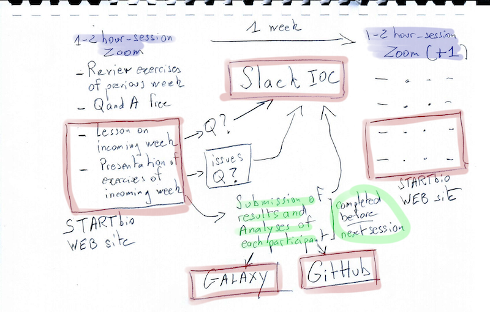

Introduction - Week-0
3-hours Zoom video-conference
Introduction of the Companions and Instructors (10 min)¶
Presentation of the IOC general workflow (Scheme) (15 min)¶

Presentation of the IOC tools (2 hours)¶
Zoom¶
We currently use the Zoom software for our video-conferences. They will be recorded and available off line in the psilo data server (see below)
Please, follow these guides lines for Zoom usage
- Use a local, desktop Zoom application instead of the online web application. You can download Zoom here
- Test your Zoom application once if you never used it. We will be happy to arrange a quick Zoom session a few days before the IOC if you feel that there may be an issue.
- Be sure that your internet connection is reasonably fast to allow the use of your camera. We much value visual interactions !
- Arrange a quiet local place for your Zoom weekly session. People talking around you are disturbing you as well as the other conference participants. If you cannot arrange to be alone in your office, please warn you colleagues well ahead the session that you will need peace.
- Use a headset with a built-in microphone. It's not a gimmick! There are now cheap headsets for video-conference that works well. Test your headset with your computer and Zoom well ahead the first IOC session.
- Prefer a Desktop (generally more powerful) to a Laptop computer.
- Use the largest screen you have (another reason not using a laptop). If you have two screens, even better, but then test zoom with your dual screen setup. We may have to leave open several windows and applications during the Zoom session.
- Be on time at the session !
- You are welcome to use the chat panel of Zoom to exchange links, code issues etc, but Slack (see below) is likely better suited to this (especially because the Zoom chat is lost when the application is shutdown. Therefore, be sure to have you Slack board available during the Zoom sessions.
There are many other interesting functionalities with Zoom, which will be covered in the presentation.
Trello¶
One of our favorite tools is Trello. You will be invited to access to the trello board of the IOC. Not a lot to say about Trello. It is just a great tool to capture information, collaborate, and organize projects.
We hope that you will still use Trello for your own projects and purposes when the IOC is finished !
STARTbio¶
Our STARTbio web site is the hub where we connect all the training materials for IOCs. To access rapidly to your bulk-RNAseq-analysis IOC, use this URL shortcut
Here, you'll find all weekly lessons, exercises, instructions, etc...
Importantly, you, yes, you, are welcome to propose modifications or fixes to the STARTbio
IOC web pages !
Assuming that during this IOC you will become familiar with the use of GitHub, all you
have to do is click on the pencil icon  at the top of each page and propose your modifications in a branch of our GitHub startbio
repository.
at the top of each page and propose your modifications in a branch of our GitHub startbio
repository.
Slack¶
Slack is a workspace to exchange messages or files, follow conversations, communicate about issues and ideas.
If you haven't already done so, you will first need to open a Slack account by providing a username and password (you can also use authentication through Google or Apple).
If you have already a Slack account, you can connect to this account using this URL.
Attention !
If you have multiple login emails for your Slack account, it can become confusing if some of your workspaces are identified with one email and others with another email.
This might happen, for example, if you were invited to a Slack workspace with a different email than the one you initially used to create your first Slack workspace.
Get Slack app on your local computer
We really strongly recommend that you use a desktop version of the slack application on your computer(s).
Once installed, this desktop Slack application will connect to your Slack account(s) and import locally your workspace, including the workspace dedicated to this IOC
Last but not least, Slack is not an option: we will be extremely reluctant to communicate by email with you about this IOC.
Indeed, emails capture information very poorly, because very often the subject headings are poorly chosen (or not chosen at all...), conversations by email deal with heterogeneous subjects, the recipients of a series of messages vary over time, and other joyful things - the imagination of Internet users is limitless (and exhausting)....
Instead, use your IOC Slack
GitHub¶
Git is a powerful versionning system. The software was implemented in web environments to create even more powerful system of continuous development and continuous integration.
This is the case of GitHub which we have chosen in ARTbio. GitLab is another option, which will not use here.
Good news ! there is a GitHub repository just for your IOC here. This repository is private. Therefore, to access it, you will need to create a personal GitHub account, and to communicate your GitHub identifier to be invited to contribute to (and benefit from) the repository.
We are not going to use the repository intensively ARTbio_064_IOC_Bulk-RNAseq. However, we will try to take advantage of it to introduce you to the notions of FAIR (Findability, Accessibility, interoperability and reproducibility) and familiarize you with the continuous integration and transparency of bioinformatics analyses.
Disclosure
The learning curve of git and github is not steep for a biologist... which unfortunately means that you will have to make a substantial effort before understanding the benefit of GitHub and being able to manipulate it without discomfort. But if you make the necessary effort, rest assured that you won't regret it.
For a very good introductory journal to Git and GitHub, although a bit old, see this article
GitHub is also very good at teaching how to use it... You can go from there!
PSILO storage (15 min)¶
PSILO is file storage server with a NextCloud web interface. If you are affiliated to Sorbonne-Université (and have a corresponding email address), you may have already an account on PSILO. In any case, as an IOC participant, whatever your affiliation. We will configure for you a PSILO account with the email of your choice and we will send you your credentials to access to this account.
The NextCloud interface is rather easy and intuitive, and NextCloud documentation is extensive and easy to find with a web search engine.
We will use PSILO to store large files, such as input datasets or important analysis results. Importantly, we will show you how to quickly transfer files from PSILO to your Galaxy account, your local computer, GitHub, etc...
We may also use our ARTbio PSILO account to share files with you !
You get it: stop exchanging research datasets (including excel tables) using your email client 
Galaxy (65 min)¶
Galaxy is a web service which provides a very powerful analysis environment.
Galaxy is particularly well suited to bulk RNAseq analysis because virtually all the bioinformatics tools necessary to perform it are available in its environment, have been proven and are continuously improved by a very large community of analysts and developers.
But the main reasons why we use Galaxy at ARTbio is that Galaxy helps immensely in making your analysis:
- REPRODUCIBLE (by others, but believe us, by you too )
- TRANSPARENT. Galaxy captures the smallest details of an analysis, allows you to build complete workflows, from input datasets to the most conclusive datasets of your analyses, including all the steps and tools you will have used. Finally, by having correctly constructed a Galaxy workflow, writing the “Materials and Methods” section of a manuscript is child’s play!
- ACCESSIBLE. Everything is done in the Galaxy framework to allow you to exchange your information with others and explicitly report any problems or bugs encountered. Generally, biologists are not very good at correctly describing problems and concerns encountered when analyzing with a computer. Galaxy helps tremendously in this important area. It also makes it possible to carry out an analysis in real collaboration.
Each IOC participant will have a Galaxy account on the artbio.snv.jussieu.fr server. We will give you the login and password for your account, probably on Slack and perhaps on Trello.
So we will immediately take advantage of an invaluable resource of the Galaxy community, the Galaxy Training Network (GTN), in order to take together a short introductory tour of the Galaxy environment.
A short introduction to Galaxy¶
Enough talking!
You are going to follow the tutorial A short introduction to Galaxy using your Galaxy account on the server artbio.snv.jussieu.fr.
Open this training link in a new tab in your browser, and keep it next to your Galaxy window !

Possible confusion about the sharing story with yourself step!
The above tutorial says Try and create a link for your history and share it
with…yourself!.
It is indeed impossible to share an history with yourself if you do it using your login email. What is actually possible is to generate a share link for your story, and open this link in a new window in your browser.
However, please note in this case that what you will see is not exactly what another user will see: that other user will have the option to import the shared story into their own account, for e.g. to re-run a tool on another data set.
Import data from Psilo to Galaxy¶
Do it yourself !
- Upload a file from your local computer: either a png, jpeg, or tiff image, or a pdf file, or a tsv text file, or a small sequence file (fasta, fastq...)
- Share your file on psilo, by clicking the sharing icon, then clinking the
 icon in the left handside pop-up menu.
icon in the left handside pop-up menu. - Copy and Paste the share link in a new browser window
- At the top right corner of the new window, there are three dots, just to the right
of the
Téléchargerbutton. Click on these three dots, and copy the direct link as shown on this small screenshot.

- Paste this link in a safe place (an open note, and open text file, whatever). As We are writing this doc, we are using this DIRECT test link that should still work today.
- Go to your Galaxy account
- Create a new history and name it
PSILO file transfer - Click on the
Upload Databutton

- Click on the
Paste/Fetch Databutton and copy your PSILO direct link in the central field as shown on this small screenshot.
- Click on the Start button and then on the close button.
- Your file transfer from PSILO to you Galaxy history should be soon completed !
- Check it out, by clicking on the
eyeicon.
It did not work for you ?
This is most probably because you did not copy the direct psilo link but, instead, the indirect link that display an intermediate "download file" window.
An advanced Psilo to Galaxy Transfer Use-Case¶
Generally, you have a serie of files to transfer from Psilo to Galaxy.
As we previously showed, using the url of a file shared in Psilo in the download Galaxy interface is a simple operation.
However, this can become very tedious if you have more than 10 files !
Here, we are going to show how to handle a case with 12 files to transfer from psilo
to Galaxy. As you will see, this case can be easily scaled-up to > 100 files, provided that
you have the good tools and you are not reluctant to use regular expressions.
And you know what ? The good tools and easy use of regular expression are just provided by Galaxy !...
Let's start from Psilo and the 12 files stored in the PRJNA630433 folder.
- Somehow you must have a list of these files. Keep it handy!
SRR11688222.fastqsanger.gz SRR11688221.fastqsanger.gz SRR11688228.fastqsanger.gz SRR11688227.fastqsanger.gz SRR11688218.fastqsanger.gz SRR11688219.fastqsanger.gz SRR11688220.fastqsanger.gz SRR11688223.fastqsanger.gz SRR11688224.fastqsanger.gz SRR11688225.fastqsanger.gz SRR11688226.fastqsanger.gz SRR11688229.fastqsanger.gz - Share the folder by clicking the link icon on the figure above (white arrow)
- Create a public link and copy it. This is something in the form of:
https://psilo.sorbonne-universite.fr/index.php/s/gqE3fsgr7XKiJXq - Paste this link in a new web browser window
-
Click the upper white dots and copy the
direct link -
In our use case, it is
Note that it is the same link as the public link, plus the suffix/download -
Now, if you add the string
?path=%2F&files=and the name of the first file in the listSRR11688222.fastqsanger.gz, you obtain the following direct link to this fileYou can test it in another browser window: it should trigger the download in your local computerhttps://psilo.sorbonne-universite.fr/index.php/s/gqE3fsgr7XKiJXq/download?path=%2F&files=SRR11688218.fastqsanger.gzThus the pattern of a working link in our use case is
https://psilo.sorbonne-universite.fr/index.php/s/gqE3fsgr7XKiJXq/download?path=%2F&files=+<filename> -
Copy this list,
go to your Galaxy account, and paste it in theSRR11688222.fastqsanger.gz SRR11688221.fastqsanger.gz SRR11688228.fastqsanger.gz SRR11688227.fastqsanger.gz SRR11688218.fastqsanger.gz SRR11688219.fastqsanger.gz SRR11688220.fastqsanger.gz SRR11688223.fastqsanger.gz SRR11688224.fastqsanger.gz SRR11688225.fastqsanger.gz SRR11688226.fastqsanger.gz SRR11688229.fastqsanger.gzUpload Data→Paste/Fetch datapanel. After pressing start, you will have this list as a Galaxy dataset. - Now you can use the Galaxy tool
Regex Find And Replace (Galaxy Version 1.0.3)- Select the file list dataset as an input of the tool form
- Click the
+ Insert Checkbutton - In the
Find Regexfield, just enter^that in regex means "the beginning of a line" - In the
Replacementfield, enter the string formed above - And press the
Executebutton !
-
This tool will return the following final list of working URLs for the files.
Nota Bene: If there were 100 or 1000 files, there would be no more work !https://psilo.sorbonne-universite.fr/index.php/s/gqE3fsgr7XKiJXq/download?path=%2F&files=SRR11688222.fastqsanger.gz https://psilo.sorbonne-universite.fr/index.php/s/gqE3fsgr7XKiJXq/download?path=%2F&files=SRR11688221.fastqsanger.gz https://psilo.sorbonne-universite.fr/index.php/s/gqE3fsgr7XKiJXq/download?path=%2F&files=SRR11688228.fastqsanger.gz https://psilo.sorbonne-universite.fr/index.php/s/gqE3fsgr7XKiJXq/download?path=%2F&files=SRR11688227.fastqsanger.gz https://psilo.sorbonne-universite.fr/index.php/s/gqE3fsgr7XKiJXq/download?path=%2F&files=SRR11688218.fastqsanger.gz https://psilo.sorbonne-universite.fr/index.php/s/gqE3fsgr7XKiJXq/download?path=%2F&files=SRR11688219.fastqsanger.gz https://psilo.sorbonne-universite.fr/index.php/s/gqE3fsgr7XKiJXq/download?path=%2F&files=SRR11688220.fastqsanger.gz https://psilo.sorbonne-universite.fr/index.php/s/gqE3fsgr7XKiJXq/download?path=%2F&files=SRR11688223.fastqsanger.gz https://psilo.sorbonne-universite.fr/index.php/s/gqE3fsgr7XKiJXq/download?path=%2F&files=SRR11688224.fastqsanger.gz https://psilo.sorbonne-universite.fr/index.php/s/gqE3fsgr7XKiJXq/download?path=%2F&files=SRR11688225.fastqsanger.gz https://psilo.sorbonne-universite.fr/index.php/s/gqE3fsgr7XKiJXq/download?path=%2F&files=SRR11688226.fastqsanger.gz https://psilo.sorbonne-universite.fr/index.php/s/gqE3fsgr7XKiJXq/download?path=%2F&files=SRR11688229.fastqsanger.gz -
We are finally ready to upload this list of files to Galaxy:
- Click one more time
Upload Databut this time click the tabRule-based - Paste the above url list in the central field, keeping the other
Upload data asandLoad tabular data fromasCollection(s)andPasted Table, respectively. - Click the
Buildbutton - On the next panel, start by adding a column (
+ Columnbutton),Using a regular Expression
- Leave
From ColumnAselected - Check the radio button
Create columns matching expression groups - in the field
Regular Expression ?enter exactly the following string pattern leave theNumber of groupsas1
and press the button
Apply- Now, Press the
+ Rules buttonand select the itemAdd / Modify Column Definitionsin the pop up list. - Click the
Add Definitionbutton - Select
URLin the drop-down menu - Click one more time the
+ Add Definitionbutton - Select
List Identifier(s)item in the drop-down menu - Click the
Select a columnmenu and this time, selectB - Click the
Applybutton - Give a name to the new collection to be built, for instance
PRJNA630433 Input data - And finally, press the
Uploadbutton
- Click one more time
-
This is it ! The download of all files as a dataset collection should start and take a certain amount of time, depending on the size and number of your files.